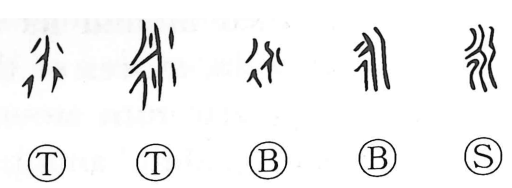

永

Kun: nagai | On: ei
eternity ・ forever ・ long (time)
Explanation
This character began as the image of flowing water, specifically a place where streams gather and surge onward as one forceful current. From that picture of a flow that continues far, it came to mean “long,” and especially “a long span of time.” By contrast, the form seen in 派 depicts water dividing into separate channels, and so gives the sense of branching off.